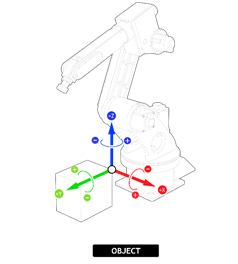

Jogging is the manual process of moving the axes of the robot. Individual axis jog can be positive or negative relative to the axis shaft. Multiple axes jog manipulates the TCP position in Cartesian coordinate system.
As a prerequisite for jogging the robot, FWD_IN and REV_IN must be set for each robot axis. Note: inputs for FWD_IN and REV_IN are active low.
|
JOG_OPERATION(mode) |
||
|
Parameters: |
||
|
mode |
0 (Default) |
Jogging disabled |
|
1 |
Joint jog |
|
|
2 |
World Frame jog |
|
|
3 |
Base Frame jog |
|
|
4 |
Tool Frame jog |
|
|
5 |
Object Frame jog |
|
Once FWD_IN and REV_IN for all axes are set, jog mode must be set using JOG_OPERATION command. Change the jog mode to activate the process and use FWD_JOG and REV_JOG inputs to jog the robot. Set jog mode back to 0 to release jog process for the execution of move instructions.
Jog cannot be performed until axes are idle.
JOG_OPERATION command must be executed in the same base array of the robot.
There are five modes to jog the robot, Joint mode (1), World mode (2), Base mode (3), Tool mode (4) and Object mode (5).
Each axis moves independently.
WORLD (mode = 2): The end effector moves straight along the world coordinate system. The orientation uses extrinsic rotations.
BASE (mode = 3): The end effector moves straight along the base coordinate system. The orientation uses extrinsic rotations.
The end effector moves straight along the tool coordinate system. The orientation uses intrinsic rotation.
The end effector moves straight along the active object frame. The orientation uses extrinsic rotations.

Extrinsic rotations are elemental rotations that occur about the axes of the fixed coordinate system XYZ. The XYZ system rotates, while XYZ is fixed. Intrinsic rotations are elemental rotations that occur about the axes of the rotating coordinate system XYZ, which changes its orientation after each elemental rotation.
JOG_OPERATION(0) 'Disable jogging
JOG_OPERATION(1) 'Joint jog